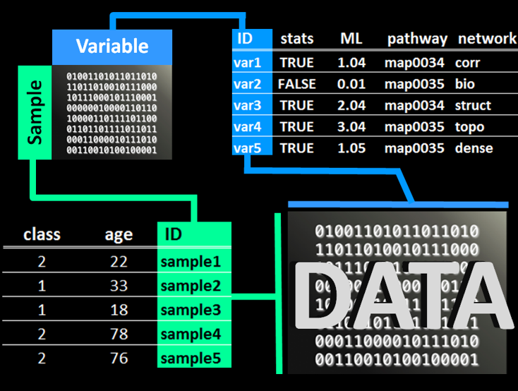

Workflows
Data anlysis workflows are encapsulated in domain specific modules. The module results can be linked, visualized and combined into interactive reports.
Linking modules
Induvidual module results can be combined. For example, here is an example data worflow showing how to load, preprocess and review the results for your data.
%%{init: {'theme': 'dark' }%%
graph LR
1((1)) --> data["fa:fa-database Data #9679;"];
data --> 2;
2((2)) --> preproc["fa:fa-scissors Preprocess #9679;"];
3((3)) --> plot["fa:fa-braille Plot #9679;"];
4((4)) --> report["fa:fa-file-text-o Report #9679;"];
preproc --> 3;
preproc --> 4;
classDef green fill:#33a378, color:#fff, stroke:#33a378;
classDef blue fill:#4472c4, color:#fff, stroke:#4472c4;
class 1 blue;
class 2 blue;
class 3 blue;
class 4 blue;
class data green;
class preproc green;
class plot green;
class report green;
The Preprocess module is used to separate the numeric data from its sample (row) and variable (column) meta data. This creates a _data, _row_meta and _col_meta objects for each original data set. An example of these objects relate to one another is shown below.

The Preprocess module can also be used to overview and impute missing values.
Module workflows
Each module uses the same basic workflow. For example, to prepare the data for analyis you can use the preprocess module with the following workflow.
%%{init: {'theme': 'dark'} }%%
graph LR
1((1)) --> preproc["fa:fa-scissors Preprocess #9679;"];
2((2)) --> calculate("fa:fa-sliders Calculate #9679;");
3((3)) --> explore("fa:fa-pencil-square-o Explore #9679;");
4((4)) --> plot("fa:fa-bar-chart Plot #9679;")
5((5)) --> report("fa:fa-file-text-o Report #9679;");
6((6)) --> save("fa:fa-file Save #9679;");
preproc --> 4;
preproc -->5;
preproc --> 2;
preproc --> 3;
calculate --> 6;
classDef green fill:#33a378, color:#fff, stroke:#33a378;
classDef blue fill:#4472c4, color:#fff, stroke:#4472c4;
classDef gray fill:#808080, color:#fff, stroke:#4472c4;
class 1 blue;
class 2 blue;
class 3 blue;
class 4 blue;
class 5 blue;
class 6 blue;
class preproc green;
class plot gray;
class report gray;
class explore gray;
class calculate gray;
class save gray;
Full workflow
Below is an example of how to progress an analysis from data loading, formatting and all the way to creating rich mapped networks.
%%{init: {'theme': 'dark'}}%%
graph LR
1((1)) --> data["fa:fa-database Data #9679;"];
2((2)) --> preproc["fa:fa-scissors Preprocess #9679;"];
3((3)) --> stats["fa:fa-superscript Statistics #9679;"];
4((4)) --> path["fa:fa-flask Pathway #9679;"];
5((5)) --> clust["fa:fa-snowflake-o Cluster #9679;"];
6((6)) --> multi["fa:fa-codepen Multivariate #9679;"];
7((7)) --> ml["fa:fa-university Model #9679;"];
8((8)) --> net["fa:fa-share-alt Network #9679;"];
9((9)) --> report["fa:fa-file-text-o Report #9679;"];
vis["fa:fa-braille Plot."];
data --> 2;
preproc --> 3;
preproc --> 5;
preproc --> 6;
preproc --> 7;
stats --> 4;
preproc --> 8;
stats --> vis;
multi --> vis;
clust --> vis;
ml --> vis;
classDef green fill:#33a378, color:#fff, stroke:#33a378;
classDef blue fill:#4472c4, color:#fff, stroke:#4472c4;
class 1 blue;
class 2 blue;
class 3 blue;
class 4 blue;
class 5 blue;
class 6 blue;
class 7 blue;
class 8 blue;
class 9 blue;
class data green;
class preproc green;
class stats green;
class clust green;
class multi green;
class ml green;
class path green;
class report green;
class net green;
class vis green
Available analyses
Data
upload data from files or load saved projects
overview and summarize data components
manage saved data
download
Plot
interactively filter data to plot
create dynamic visualizations
line plots
scatter plots
box plots
map data to plot options
size/width
color
shape
row and/or column sub plots
modify plotting themes, text and legend
Preprocess
merge numeric data with sample and variable meta data
overview and impute missing values
Statistics
identify significant differences between two groups
group summary statistics
volcano plots
violin and box plots
Cluster
hierarchical clustering
combined samples and variables
samples
variables
correlations between samples or variables
heatmaps
dendrograms
Multivariate
Principal Components Analysis (PCA)
Visualize results
scree plots
scores plot
loadings plot
biplot
outlier plot
Pathway
biochemical pathway enrichment analysis
biochemical pathway and fold change visualization
Model
machine learning model training and validation
classification
regression
feature selection
model ensemble
Network
Calculate relationships
biochemical product to precursor
molecular structural similarity
empirical regularized correlations
interactive network visualizations
map analysis results to network properties
combine and modify network relationships and properties